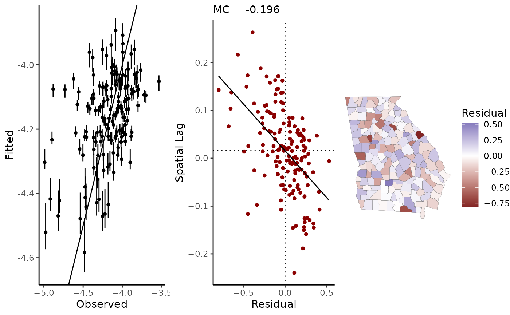
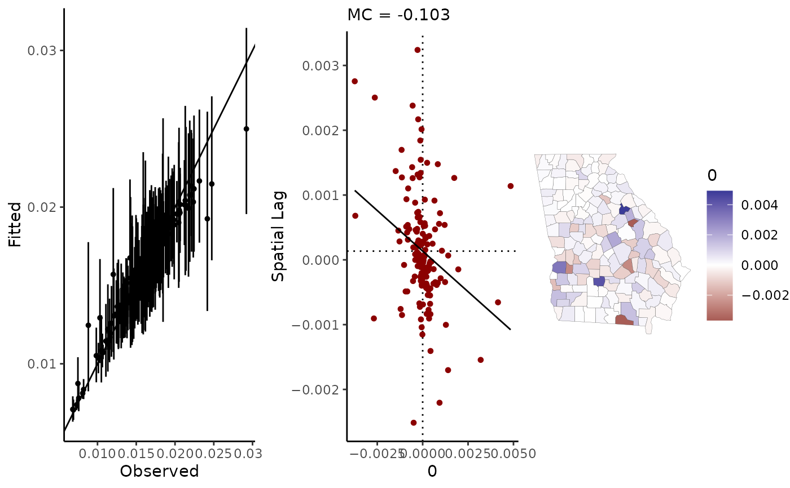

Use the CAR model as a prior on parameters, or fit data to an auto-Gaussian CAR model.
stan_car(
formula,
slx,
re,
data,
car_parts,
C,
family = gaussian(),
prior = NULL,
ME = NULL,
centerx = FALSE,
prior_only = FALSE,
censor_point,
chains = 4,
iter = 2000,
refresh = 500,
pars = NULL,
control = NULL,
...
)Cressie, Noel (2015 (1993)). Statistics for Spatial Data. Wiley Classics, Revised Edition.
Cressie, Noel and Wikle, Christopher (2011). Statistics for Spatio-Temporal Data. Wiley.
Donegan, Connor and Chun, Yongwan and Griffith, Daniel A. (2021). Modeling community health with areal data: Bayesian inference with survey standard errors and spatial structure. Int. J. Env. Res. and Public Health 18 (13): 6856. DOI: 10.3390/ijerph18136856 Data and code: https://github.com/ConnorDonegan/survey-HBM.
Donegan, Connor (2021). Spatial conditional autoregressive models in Stan. OSF Preprints. doi:10.31219/osf.io/3ey65 .
Haining, Robert and Li, Guangquan (2020). Modelling Spatial and Spatial-Temporal Data: A Bayesian Approach. CRC Press.
A model formula, following the R formula syntax. Binomial models can be specified by setting the left hand side of the equation to a data frame of successes and failures, as in cbind(successes, failures) ~ x.
Formula to specify any spatially-lagged covariates. As in, ~ x1 + x2 (the intercept term will be removed internally). When setting priors for beta, remember to include priors for any SLX terms.
To include a varying intercept (or "random effects") term, alpha_re, specify the grouping variable here using formula syntax, as in ~ ID. Then, alpha_re is a vector of parameters added to the linear predictor of the model, and:
alpha_re ~ N(0, alpha_tau)
alpha_tau ~ Student_t(d.f., location, scale).
With the CAR model, any alpha_re term should be at a different level or scale than the observations; that is, at a different scale than the autocorrelation structure of the CAR model itself.
A data.frame or an object coercible to a data frame by as.data.frame containing the model data.
A list of data for the CAR model, as returned by prep_car_data.
Optional spatial connectivity matrix which will be used to calculate residual spatial autocorrelation as well as any user specified slx terms; it will automatically be row-standardized before calculating slx terms. See shape2mat.
The likelihood function for the outcome variable. Current options are auto_gaussian(), binomial(link = "logit"), and poisson(link = "log"); if family = gaussian() is provided, it will automatically be converted to auto_gaussian().
A named list of parameters for prior distributions (see priors):
The intercept is assigned a Gaussian prior distribution (see normal
Regression coefficients are assigned Gaussian prior distributions. Variables must follow their order of appearance in the model formula. Note that if you also use slx terms (spatially lagged covariates), and you use custom priors for beta, then you have to provide priors for the slx terms. Since slx terms are prepended to the design matrix, the prior for the slx term will be listed first.
The scale of the CAR model, car_scale. The scale is assigned a Student's t prior model (constrained to be positive).
The spatial autocorrelation parameter in the CAR model, rho, is assigned a uniform prior distribution. By default, the prior will be uniform over all permissible values as determined by the eigenvalues of the connectivity matrix, C. The range of permissible values for rho is automatically printed to the console by prep_car_data.
The scale parameter for any varying intercepts (a.k.a exchangeable random effects, or partial pooling) terms. This scale parameter, tau, is assigned a Student's t prior (constrained to be positive).
To model observational uncertainty (i.e. measurement or sampling error) in any or all of the covariates, provide a list of data as constructed by the prep_me_data function.
To center predictors on their mean values, use centerx = TRUE. If the ME argument is used, the modeled covariate (i.e., latent variable), rather than the raw observations, will be centered. When using the ME argument, this is the recommended method for centering the covariates.
Logical value; if TRUE, draw samples only from the prior distributions of parameters.
Integer value indicating the maximum censored value; this argument is for modeling censored (suppressed) outcome data, typically disease case counts or deaths.
Number of MCMC chains to use.
Number of samples per chain.
Stan will print the progress of the sampler every refresh number of samples. Set refresh=0 to silence this.
Optional; specify any additional parameters you'd like stored from the Stan model.
A named list of parameters to control the sampler's behavior. See stan for details.
Other arguments passed to sampling. For multi-core processing, you can use cores = parallel::detectCores(), or run options(mc.cores = parallel::detectCores()) first.
An object of class class geostan_fit (a list) containing:
Summaries of the main parameters of interest; a data frame.
Widely Applicable Information Criteria (WAIC) with a measure of effective number of parameters (eff_pars) and mean log pointwise predictive density (lpd), and mean residual spatial autocorrelation as measured by the Moran coefficient.
an object of class stanfit returned by rstan::stan
a data frame containing the model data
the user-provided or default family argument used to fit the model
The model formula provided by the user (not including CAR component)
The slx formula
A list containing re, the varying intercepts (re) formula if provided, and
Data a data frame with columns id, the grouping variable, and idx, the index values assigned to each group.
Prior specifications.
If covariates are centered internally (centerx = TRUE), then x_center is a numeric vector of the values on which covariates were centered.
A data frame with the name of the spatial component parameter (either "phi" or, for auto Gaussian models, "trend") and method ("CAR")
A list indicating if the object contains an ME model; if so, the user-provided ME list is also stored here.
Spatial connectivity matrix (in sparse matrix format).
CAR models are discussed in Cressie and Wikle (2011, p. 184-88), Cressie (2015, Ch. 6-7), and Haining and Li (2020, p. 249-51).
The Stan code for this implementation of the CAR model first introduced in Donegan et al. (2021, supplementary material) for models of small area survey data.
Details and results depend on the family argument, as well as on the particular CAR specification chosen (see prep_car_data).
When family = auto_gaussian(), the CAR model is specified as follows:
Y ~ MVGauss(Mu, Sigma)
Sigma = (I - rho C)^-1 * M * tau^2
where Mu is the mean vector (with intercept, covariates, etc.), C is a spatial connectivity matrix, and M is a known diagonal matrix with diagonal entries proportional to the conditional variances. C and M are provided by prep_car_data.
The covariance matrix of the CAR model, Sigma, contains two parameters: car_rho (rho), which controls the degree of spatial autocorrelation, and the scale parameter, car_scale (tau). The range of permissible values for rho depends on the specification of C and M; for options, see prep_car_data and Cressie and Wikle (2011, pp. 184-188).
The auto-Gaussian model contains an implicit spatial trend (i.e., autocorrelation) component which is calculated as follows (Cressie 2015, p. 564):
trend = rho * C * (Y - Mu).
This term can be extracted from a fitted auto-Gaussian model using the spatial method.
When applied to a fitted auto-Gaussian model, the residuals.geostan_fit method returns `de-trended' residuals by default. That is,
residual = Y - Mu - trend.To obtain "raw" residuals (Y - Mu), use residuals(fit, detrend = FALSE).
For family = poisson(), the model is specified as:
Y ~ Poisson(exp(offset + lambda))
lambda ~ MVGauss(Mu, Sigma)
Sigma = (I - rho C)^-1 * M * tau^2
These models are most often used to calculate small area incidence rates (mortality or disease incidence rates); the user provided offset should be, then, the natural logarithm of the denominator in the rates, e.g., log-population at risk.
For Poisson models, the spatial method returns the parameter vector phi, which is the log-risk minus the intercept and any covariates:
phi = lambda - Mu.This is the spatial autocorrelation component. This is equivalent to specifying the model as:
Y ~ Poisson(exp(offset + Mu + phi))
phi ~ MVGauss(0, Sigma)
Sigma = (I - rho C)^-1 * M * tau^2.
In the Poisson CAR model, phi contains a latent spatial trend as well as additional variation around it. If you would like to extract the latent/implicit spatial trend from phi, you can do so by calculating (following Cressie 2015, p. 564):
trend = rho * C * phi.For family = binomial(), the model is specified as:
Y ~ Binomial(N, theta)
logit(theta) ~ MVGauss(Mu, Sigma)
Sigma = (I - rho C)^-1 * M * tau^2
where outcome data Y are counts, N is the number of trials, and theta is the 'success' rate. Note that the model formula should be structured as: cbind(sucesses, failures) ~ x, such that trials = successes + failures.
For fitted Binomial models, the spatial method will return the parameter vector phi, equivalent to:
phi = logit(theta) - Mu.The slx argument is a convenience function for including SLX terms. For example,
stan_glm(y ~ x1 + x2, slx = ~ x1, \...)
is a shortcut for
stan_glm(y ~ I(W \%*\% x1) + x1 + x2, \...)
where W is a row-standardized spatial weights matrix (see shape2mat). SLX terms will always be prepended to the design matrix, as above, which is important to know when setting prior distributions for regression coefficients.
For measurement error (ME) models, the SLX argument is the only way to include spatially lagged covariates since the SLX term needs to be re-calculated on each iteration of the MCMC algorithm.
The ME models are designed for surveys with spatial sampling designs, such as the American Community Survey (ACS) estimates. With estimates, x, and their standard errors, se, the ME models have one of the the following two specifications, depending on the user input:
x ~ Gauss(x_true, se)
x_true ~ MVGauss(mu, Sigma)
Sigma = (I - rho C)^(-1) M * tau^2
mu ~ Gauss(0, 100)
tau ~ student_t(10, 0, 40)
rho ~ uniform(lower_bound, upper_bound)
where the covariance matrix, Sigma, has the conditional autoregressive specification, and tau is the scale parameter. For non-spatial ME models, the following is used instead:
x ~ Gauss(x_true, se)
x_true ~ student_t(df, mu, sigma)
df ~ gamma(3, 0.2)
mu ~ Gauss(0, 100)
sigma ~ student_t(10, 0, 40)For strongly skewed variables, such census tract poverty rates, it can be advantageous to apply a logit transformation to x_true before applying the CAR or Student t prior model. When the logit argument is used, the model becomes:
x ~ Gauss(x_true, se)
logit(x_true) ~ MVGauss(mu, Sigma)and similar for the Student t model.
Vital statistics systems and disease surveillance programs typically suppress case counts when they are smaller than a specific threshold value. In such cases, the observation of a censored count is not the same as a missing value; instead, you are informed that the value is an integer somewhere between zero and the threshold value. For Poisson models (family = poisson())), you can use the censor_point argument to encode this information into your model.
Internally, geostan will keep the index values of each censored observation, and the index value of each of the fully observed outcome values. For all observed counts, the likelihood statement will be:
p(y_i | data, model) = Poisson(y_i | fitted_i),
as usual. For each censored count, the likelihood statement will equal the cumulative Poisson distribution function for values zero through the censor point:
p(y_j | data, model) = sum_{m=0}^censor_point Poisson( c_m | fitted_j),
For example, the US Centers for Disease Control and Prevention's CDC WONDER database censors all death counts between 0 and 9. To model CDC WONDER mortality data, you could provide censor_point = 9 and then the likelihood statement for censored counts would equal the summation of the Poisson probability mass function over each integer ranging from zero through 9 (inclusive), conditional on the fitted values (i.e., all model parameters). See Donegan (2021) for additional discussion, references, and Stan code.
# \donttest{
# for automatic parallel processing
#options(mc.cores = parallel::detectCores())
# model mortality rates
data(georgia)
C <- shape2mat(georgia, style = "B")
cp <- prep_car_data(C)
#> Range of permissible rho values: -1.661134 1
fit <- stan_car(deaths.male ~ offset(log(pop.at.risk.male)),
car_parts = cp,
data = georgia,
family = poisson())
#>
#> *Setting prior parameters for intercept
#> Distribution: normal
#> location scale
#> 1 -4.2 5
#>
#> *Setting prior for CAR scale parameter (car_scale)
#> Distribution: student_t
#> df location scale
#> 1 10 0 3
#>
#> *Setting prior for CAR spatial autocorrelation parameter (rho)
#> Distribution: uniform
#> lower upper
#> 1 -1.7 1
#>
#> SAMPLING FOR MODEL 'foundation' NOW (CHAIN 1).
#> Chain 1:
#> Chain 1: Gradient evaluation took 9.8e-05 seconds
#> Chain 1: 1000 transitions using 10 leapfrog steps per transition would take 0.98 seconds.
#> Chain 1: Adjust your expectations accordingly!
#> Chain 1:
#> Chain 1:
#> Chain 1: Iteration: 1 / 2000 [ 0%] (Warmup)
#> Chain 1: Iteration: 500 / 2000 [ 25%] (Warmup)
#> Chain 1: Iteration: 1000 / 2000 [ 50%] (Warmup)
#> Chain 1: Iteration: 1001 / 2000 [ 50%] (Sampling)
#> Chain 1: Iteration: 1500 / 2000 [ 75%] (Sampling)
#> Chain 1: Iteration: 2000 / 2000 [100%] (Sampling)
#> Chain 1:
#> Chain 1: Elapsed Time: 1.18641 seconds (Warm-up)
#> Chain 1: 1.19602 seconds (Sampling)
#> Chain 1: 2.38243 seconds (Total)
#> Chain 1:
#>
#> SAMPLING FOR MODEL 'foundation' NOW (CHAIN 2).
#> Chain 2:
#> Chain 2: Gradient evaluation took 8.6e-05 seconds
#> Chain 2: 1000 transitions using 10 leapfrog steps per transition would take 0.86 seconds.
#> Chain 2: Adjust your expectations accordingly!
#> Chain 2:
#> Chain 2:
#> Chain 2: Iteration: 1 / 2000 [ 0%] (Warmup)
#> Chain 2: Iteration: 500 / 2000 [ 25%] (Warmup)
#> Chain 2: Iteration: 1000 / 2000 [ 50%] (Warmup)
#> Chain 2: Iteration: 1001 / 2000 [ 50%] (Sampling)
#> Chain 2: Iteration: 1500 / 2000 [ 75%] (Sampling)
#> Chain 2: Iteration: 2000 / 2000 [100%] (Sampling)
#> Chain 2:
#> Chain 2: Elapsed Time: 1.16507 seconds (Warm-up)
#> Chain 2: 1.18346 seconds (Sampling)
#> Chain 2: 2.34853 seconds (Total)
#> Chain 2:
#>
#> SAMPLING FOR MODEL 'foundation' NOW (CHAIN 3).
#> Chain 3:
#> Chain 3: Gradient evaluation took 0.0001 seconds
#> Chain 3: 1000 transitions using 10 leapfrog steps per transition would take 1 seconds.
#> Chain 3: Adjust your expectations accordingly!
#> Chain 3:
#> Chain 3:
#> Chain 3: Iteration: 1 / 2000 [ 0%] (Warmup)
#> Chain 3: Iteration: 500 / 2000 [ 25%] (Warmup)
#> Chain 3: Iteration: 1000 / 2000 [ 50%] (Warmup)
#> Chain 3: Iteration: 1001 / 2000 [ 50%] (Sampling)
#> Chain 3: Iteration: 1500 / 2000 [ 75%] (Sampling)
#> Chain 3: Iteration: 2000 / 2000 [100%] (Sampling)
#> Chain 3:
#> Chain 3: Elapsed Time: 1.1403 seconds (Warm-up)
#> Chain 3: 1.18058 seconds (Sampling)
#> Chain 3: 2.32088 seconds (Total)
#> Chain 3:
#>
#> SAMPLING FOR MODEL 'foundation' NOW (CHAIN 4).
#> Chain 4:
#> Chain 4: Gradient evaluation took 8.5e-05 seconds
#> Chain 4: 1000 transitions using 10 leapfrog steps per transition would take 0.85 seconds.
#> Chain 4: Adjust your expectations accordingly!
#> Chain 4:
#> Chain 4:
#> Chain 4: Iteration: 1 / 2000 [ 0%] (Warmup)
#> Chain 4: Iteration: 500 / 2000 [ 25%] (Warmup)
#> Chain 4: Iteration: 1000 / 2000 [ 50%] (Warmup)
#> Chain 4: Iteration: 1001 / 2000 [ 50%] (Sampling)
#> Chain 4: Iteration: 1500 / 2000 [ 75%] (Sampling)
#> Chain 4: Iteration: 2000 / 2000 [100%] (Sampling)
#> Chain 4:
#> Chain 4: Elapsed Time: 1.09923 seconds (Warm-up)
#> Chain 4: 1.17217 seconds (Sampling)
#> Chain 4: 2.2714 seconds (Total)
#> Chain 4:
rstan::stan_rhat(fit$stanfit)
#> `stat_bin()` using `bins = 30`. Pick better value with `binwidth`.

rstan::stan_mcse(fit$stanfit)
#> `stat_bin()` using `bins = 30`. Pick better value with `binwidth`.
print(fit)
#> Spatial Model Results
#> Formula: deaths.male ~ offset(log(pop.at.risk.male))
#> <environment: 0x556fa7fd2190>
#> Spatial method (outcome): CAR
#> Likelihood function: poisson
#> Link function: log
#> Residual Moran Coefficient: -0.0028555
#> WAIC: 1319.13
#> Observations: 159
#> Data models (ME): none
#> Inference for Stan model: foundation.
#> 4 chains, each with iter=2000; warmup=1000; thin=1;
#> post-warmup draws per chain=1000, total post-warmup draws=4000.
#>
#> mean se_mean sd 2.5% 25% 50% 75% 97.5% n_eff Rhat
#> intercept -4.169 0.002 0.078 -4.333 -4.207 -4.168 -4.127 -4.021 2597 1.001
#> car_rho 0.904 0.001 0.069 0.737 0.869 0.916 0.956 0.992 3357 1.000
#> car_scale 0.470 0.000 0.034 0.407 0.447 0.468 0.492 0.542 4806 1.000
#>
#> Samples were drawn using NUTS(diag_e) at Thu Jul 7 19:25:48 2022.
#> For each parameter, n_eff is a crude measure of effective sample size,
#> and Rhat is the potential scale reduction factor on split chains (at
#> convergence, Rhat=1).
sp_diag(fit, georgia)

# censored count outcomes
sum(is.na(georgia$deaths.female))
#> [1] 3
fit <- stan_car(deaths.female ~ offset(log(pop.at.risk.female)),
car_parts = cp,
data = georgia,
family = poisson(),
censor_point = 9)
#>
#> *Setting prior parameters for intercept
#> Distribution: normal
#> location scale
#> 1 -4.7 5
#>
#> *Setting prior for CAR scale parameter (car_scale)
#> Distribution: student_t
#> df location scale
#> 1 10 0 3
#>
#> *Setting prior for CAR spatial autocorrelation parameter (rho)
#> Distribution: uniform
#> lower upper
#> 1 -1.7 1
#>
#> SAMPLING FOR MODEL 'foundation' NOW (CHAIN 1).
#> Chain 1:
#> Chain 1: Gradient evaluation took 9.3e-05 seconds
#> Chain 1: 1000 transitions using 10 leapfrog steps per transition would take 0.93 seconds.
#> Chain 1: Adjust your expectations accordingly!
#> Chain 1:
#> Chain 1:
#> Chain 1: Iteration: 1 / 2000 [ 0%] (Warmup)
#> Chain 1: Iteration: 500 / 2000 [ 25%] (Warmup)
#> Chain 1: Iteration: 1000 / 2000 [ 50%] (Warmup)
#> Chain 1: Iteration: 1001 / 2000 [ 50%] (Sampling)
#> Chain 1: Iteration: 1500 / 2000 [ 75%] (Sampling)
#> Chain 1: Iteration: 2000 / 2000 [100%] (Sampling)
#> Chain 1:
#> Chain 1: Elapsed Time: 1.34771 seconds (Warm-up)
#> Chain 1: 1.25843 seconds (Sampling)
#> Chain 1: 2.60614 seconds (Total)
#> Chain 1:
#>
#> SAMPLING FOR MODEL 'foundation' NOW (CHAIN 2).
#> Chain 2:
#> Chain 2: Gradient evaluation took 9.7e-05 seconds
#> Chain 2: 1000 transitions using 10 leapfrog steps per transition would take 0.97 seconds.
#> Chain 2: Adjust your expectations accordingly!
#> Chain 2:
#> Chain 2:
#> Chain 2: Iteration: 1 / 2000 [ 0%] (Warmup)
#> Chain 2: Iteration: 500 / 2000 [ 25%] (Warmup)
#> Chain 2: Iteration: 1000 / 2000 [ 50%] (Warmup)
#> Chain 2: Iteration: 1001 / 2000 [ 50%] (Sampling)
#> Chain 2: Iteration: 1500 / 2000 [ 75%] (Sampling)
#> Chain 2: Iteration: 2000 / 2000 [100%] (Sampling)
#> Chain 2:
#> Chain 2: Elapsed Time: 1.64647 seconds (Warm-up)
#> Chain 2: 1.14119 seconds (Sampling)
#> Chain 2: 2.78766 seconds (Total)
#> Chain 2:
#>
#> SAMPLING FOR MODEL 'foundation' NOW (CHAIN 3).
#> Chain 3:
#> Chain 3: Gradient evaluation took 9.3e-05 seconds
#> Chain 3: 1000 transitions using 10 leapfrog steps per transition would take 0.93 seconds.
#> Chain 3: Adjust your expectations accordingly!
#> Chain 3:
#> Chain 3:
#> Chain 3: Iteration: 1 / 2000 [ 0%] (Warmup)
#> Chain 3: Iteration: 500 / 2000 [ 25%] (Warmup)
#> Chain 3: Iteration: 1000 / 2000 [ 50%] (Warmup)
#> Chain 3: Iteration: 1001 / 2000 [ 50%] (Sampling)
#> Chain 3: Iteration: 1500 / 2000 [ 75%] (Sampling)
#> Chain 3: Iteration: 2000 / 2000 [100%] (Sampling)
#> Chain 3:
#> Chain 3: Elapsed Time: 1.34171 seconds (Warm-up)
#> Chain 3: 1.23562 seconds (Sampling)
#> Chain 3: 2.57733 seconds (Total)
#> Chain 3:
#>
#> SAMPLING FOR MODEL 'foundation' NOW (CHAIN 4).
#> Chain 4:
#> Chain 4: Gradient evaluation took 9.1e-05 seconds
#> Chain 4: 1000 transitions using 10 leapfrog steps per transition would take 0.91 seconds.
#> Chain 4: Adjust your expectations accordingly!
#> Chain 4:
#> Chain 4:
#> Chain 4: Iteration: 1 / 2000 [ 0%] (Warmup)
#> Chain 4: Iteration: 500 / 2000 [ 25%] (Warmup)
#> Chain 4: Iteration: 1000 / 2000 [ 50%] (Warmup)
#> Chain 4: Iteration: 1001 / 2000 [ 50%] (Sampling)
#> Chain 4: Iteration: 1500 / 2000 [ 75%] (Sampling)
#> Chain 4: Iteration: 2000 / 2000 [100%] (Sampling)
#> Chain 4:
#> Chain 4: Elapsed Time: 1.19872 seconds (Warm-up)
#> Chain 4: 1.24486 seconds (Sampling)
#> Chain 4: 2.44358 seconds (Total)
#> Chain 4:
## DCAR specification (inverse-distance based)
library(sf)
#> Linking to GEOS 3.8.0, GDAL 3.0.4, PROJ 6.3.1; sf_use_s2() is TRUE
A <- shape2mat(georgia, "B")
D <- sf::st_distance(sf::st_centroid(georgia))
#> Warning: st_centroid assumes attributes are constant over geometries of x
A <- D * A
cp <- prep_car_data(A, "DCAR", k = 1)
#> <sparse>[ <logic> ] : .M.sub.i.logical() maybe inefficient
#> Range of permissible rho values: -0.6761887 0.3471584
fit <- stan_car(deaths.male ~ offset(log(pop.at.risk.male)),
data = georgia,
car = cp,
family = poisson())
#> Consider providing the matrix C explicitly using the C argument. The matrix C is used for calculating spatial-lag of X (SLX) terms and residual spatial autocorrelation. Since you did not provide C, the matrix is being taken from car_parts$C.
#>
#> *Setting prior parameters for intercept
#> Distribution: normal
#> location scale
#> 1 -4.2 5
#>
#> *Setting prior for CAR scale parameter (car_scale)
#> Distribution: student_t
#> df location scale
#> 1 10 0 3
#>
#> *Setting prior for CAR spatial autocorrelation parameter (rho)
#> Distribution: uniform
#> lower upper
#> 1 -0.68 0.35
#>
#> SAMPLING FOR MODEL 'foundation' NOW (CHAIN 1).
#> Chain 1:
#> Chain 1: Gradient evaluation took 0.000182 seconds
#> Chain 1: 1000 transitions using 10 leapfrog steps per transition would take 1.82 seconds.
#> Chain 1: Adjust your expectations accordingly!
#> Chain 1:
#> Chain 1:
#> Chain 1: Iteration: 1 / 2000 [ 0%] (Warmup)
#> Chain 1: Iteration: 500 / 2000 [ 25%] (Warmup)
#> Chain 1: Iteration: 1000 / 2000 [ 50%] (Warmup)
#> Chain 1: Iteration: 1001 / 2000 [ 50%] (Sampling)
#> Chain 1: Iteration: 1500 / 2000 [ 75%] (Sampling)
#> Chain 1: Iteration: 2000 / 2000 [100%] (Sampling)
#> Chain 1:
#> Chain 1: Elapsed Time: 2.3973 seconds (Warm-up)
#> Chain 1: 2.10358 seconds (Sampling)
#> Chain 1: 4.50088 seconds (Total)
#> Chain 1:
#>
#> SAMPLING FOR MODEL 'foundation' NOW (CHAIN 2).
#> Chain 2:
#> Chain 2: Gradient evaluation took 0.000135 seconds
#> Chain 2: 1000 transitions using 10 leapfrog steps per transition would take 1.35 seconds.
#> Chain 2: Adjust your expectations accordingly!
#> Chain 2:
#> Chain 2:
#> Chain 2: Iteration: 1 / 2000 [ 0%] (Warmup)
#> Chain 2: Iteration: 500 / 2000 [ 25%] (Warmup)
#> Chain 2: Iteration: 1000 / 2000 [ 50%] (Warmup)
#> Chain 2: Iteration: 1001 / 2000 [ 50%] (Sampling)
#> Chain 2: Iteration: 1500 / 2000 [ 75%] (Sampling)
#> Chain 2: Iteration: 2000 / 2000 [100%] (Sampling)
#> Chain 2:
#> Chain 2: Elapsed Time: 2.00214 seconds (Warm-up)
#> Chain 2: 2.58082 seconds (Sampling)
#> Chain 2: 4.58296 seconds (Total)
#> Chain 2:
#>
#> SAMPLING FOR MODEL 'foundation' NOW (CHAIN 3).
#> Chain 3:
#> Chain 3: Gradient evaluation took 0.000159 seconds
#> Chain 3: 1000 transitions using 10 leapfrog steps per transition would take 1.59 seconds.
#> Chain 3: Adjust your expectations accordingly!
#> Chain 3:
#> Chain 3:
#> Chain 3: Iteration: 1 / 2000 [ 0%] (Warmup)
#> Chain 3: Iteration: 500 / 2000 [ 25%] (Warmup)
#> Chain 3: Iteration: 1000 / 2000 [ 50%] (Warmup)
#> Chain 3: Iteration: 1001 / 2000 [ 50%] (Sampling)
#> Chain 3: Iteration: 1500 / 2000 [ 75%] (Sampling)
#> Chain 3: Iteration: 2000 / 2000 [100%] (Sampling)
#> Chain 3:
#> Chain 3: Elapsed Time: 2.31716 seconds (Warm-up)
#> Chain 3: 2.42687 seconds (Sampling)
#> Chain 3: 4.74403 seconds (Total)
#> Chain 3:
#>
#> SAMPLING FOR MODEL 'foundation' NOW (CHAIN 4).
#> Chain 4:
#> Chain 4: Gradient evaluation took 0.000155 seconds
#> Chain 4: 1000 transitions using 10 leapfrog steps per transition would take 1.55 seconds.
#> Chain 4: Adjust your expectations accordingly!
#> Chain 4:
#> Chain 4:
#> Chain 4: Iteration: 1 / 2000 [ 0%] (Warmup)
#> Chain 4: Iteration: 500 / 2000 [ 25%] (Warmup)
#> Chain 4: Iteration: 1000 / 2000 [ 50%] (Warmup)
#> Chain 4: Iteration: 1001 / 2000 [ 50%] (Sampling)
#> Chain 4: Iteration: 1500 / 2000 [ 75%] (Sampling)
#> Chain 4: Iteration: 2000 / 2000 [100%] (Sampling)
#> Chain 4:
#> Chain 4: Elapsed Time: 2.10494 seconds (Warm-up)
#> Chain 4: 2.02848 seconds (Sampling)
#> Chain 4: 4.13342 seconds (Total)
#> Chain 4:
print(fit)
#> Spatial Model Results
#> Formula: deaths.male ~ offset(log(pop.at.risk.male))
#> <environment: 0x556fa7fd2190>
#> Spatial method (outcome): CAR
#> Likelihood function: poisson
#> Link function: log
#> Residual Moran Coefficient: -0.00406525
#> WAIC: 1319.35
#> Observations: 159
#> Data models (ME): none
#> Inference for Stan model: foundation.
#> 4 chains, each with iter=2000; warmup=1000; thin=1;
#> post-warmup draws per chain=1000, total post-warmup draws=4000.
#>
#> mean se_mean sd 2.5% 25% 50% 75% 97.5% n_eff Rhat
#> intercept -4.122 0 0.042 -4.201 -4.151 -4.123 -4.094 -4.039 8220 1
#> car_rho 0.328 0 0.016 0.285 0.321 0.332 0.340 0.346 5358 1
#> car_scale 0.469 0 0.033 0.408 0.447 0.468 0.490 0.541 5053 1
#>
#> Samples were drawn using NUTS(diag_e) at Thu Jul 7 19:26:30 2022.
#> For each parameter, n_eff is a crude measure of effective sample size,
#> and Rhat is the potential scale reduction factor on split chains (at
#> convergence, Rhat=1).
# }